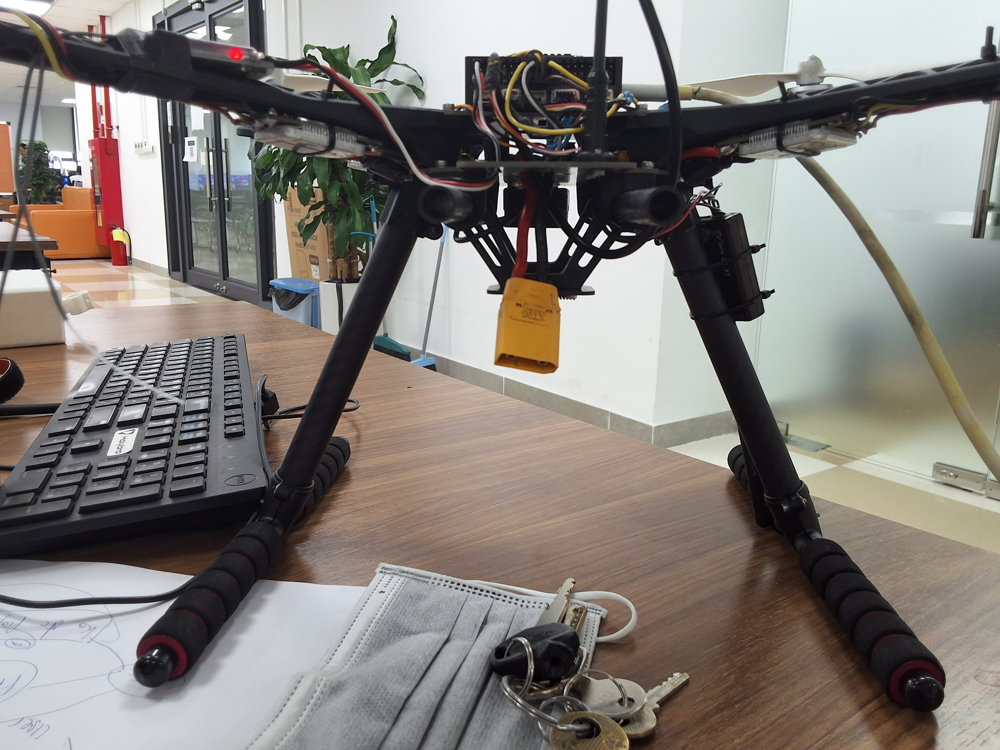
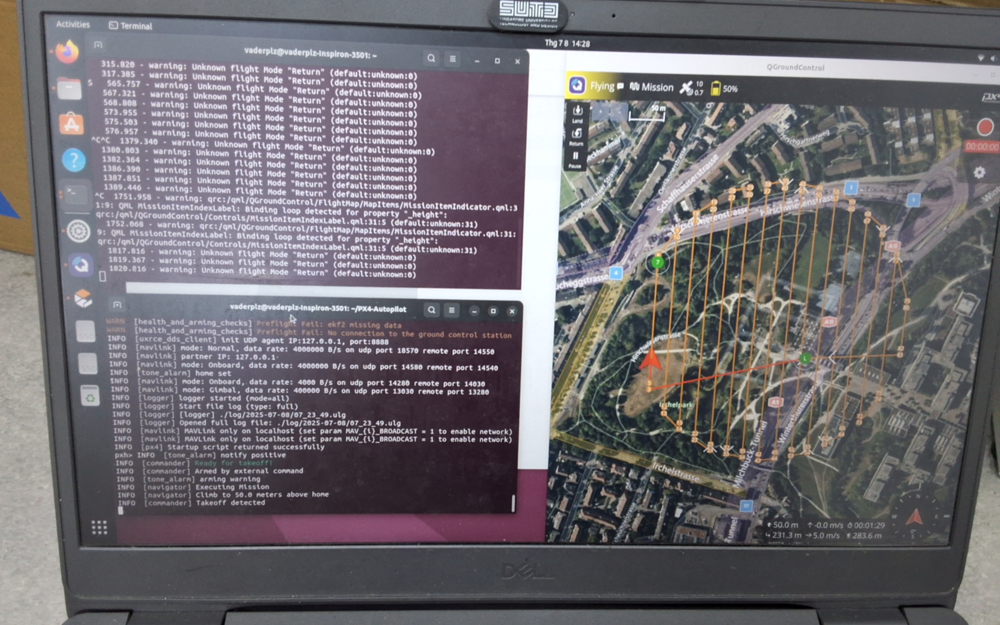
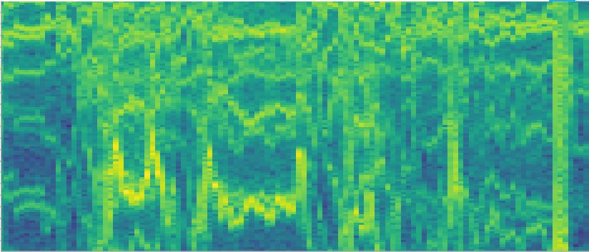

← Back to experience


UAV Engineering Internship at Phenikaa-X
An industry internship focused on UAV integration, PX4 offboard control, GPS-denied flight testing, AprilTag-based localization, and practical hardware development for a Holybro X500 platform.

Internship Overview
I worked on a real UAV development workflow that connected mechanical design, onboard computing, flight-control software, camera deployment, and flight testing. The internship gave me direct experience with the challenges of integrating and validating autonomous aerial systems outside simulation.
- Designed a battery-holder retrofit for a Holybro X500 UAV platform.
- Implemented and tested PX4 offboard velocity control for GPS-denied flight.
- Supported AprilTag-based localization and precision-landing development.
- Integrated onboard camera and companion-computer hardware.
- Participated in real flight tests as a test pilot and system integrator.
- Collected test data and supported iterative troubleshooting of the complete UAV system.
Development and Testing


Flight and System Demonstrations
Technical Areas
- PX4 and offboard control
- UAV mechanical integration
- Raspberry Pi companion computing
- AprilTag localization
- Camera deployment and real-world testing
- Flight preparation, piloting, and debugging
Reports and Documentation
Personal Note
Add a few sentences here about what you learned during the internship, the responsibility you handled, or how the experience shaped your interest in UAV autonomy.